31 ggplot ipuçları
Bu sayfada, ggplot’larınızı keskin ve gösterişli hale getirmek için ipuçlarını ve püf noktalarını ele alacağız. Temel bilgiler için ggplot temelleri sayfasına bakabilirsiniz.
Kaynaklar bölümünde bağlantılı birkaç kapsamlı ggplot2 eğitimi vardır. Bu ggplot hatırlatma sayfası ile veri görselleştirmeyi RStudio web sitesinden de indirebilirsiniz. İlham almak için R grafiği galerisi ve Data-to-viz sayfalarını incelemenizi şiddetle tavsiye ederiz.
31.1 Hazırlık
Paketleri yükleme
Bu kod parçası, analizler için gereken paketlerin yüklenmesini gösterir. Bu el kitabında, gerekirse paketi kuran ve kullanım için yükleyen pacman’dan ‘p_load()’ vurgusunu yapıyoruz. R tabanından library() ile kurulu paketleri de yükleyebilirsiniz. R paketleri hakkında daha fazla bilgi için [R basics] sayfasına bakabilirsiniz.
pacman::p_load(
tidyverse, # ggplot2 ve diğerlerini içerir
rio, # içe / dışa aktar
here, # dosyayı bul
stringr, # karakterlerle çalışmak
scales, # sayıları çevirmek
ggrepel, # akıllıca yerleştirilmiş etiketler
gghighlight, # arsanın bir bölümünü vurgula
RColorBrewer # renk skalaları
)Verileri içe aktarma
Bu sayfa için, simüle edilmiş bir Ebola salgınından vakaların veri setini içe aktarıyoruz. Takip etmek isterseniz, “clean” dosyasını indirmek için tıklayın. (.rds dosyası olarak). rio paketinden import() fonksiyonuyla verileri içe aktarın (.xlsx, .csv, .rds gibi birçok dosya türünü işler - ayrıntılar için [İçe aktarma ve dışa aktarma] sayfasına bakabilirsiniz).
linelist <- rio::import("linelist_cleaned.rds")Satır listesinin ilk 50 satırı aşağıda görüntülenir.
31.2 Renk, dolgu, eksen vb. için ölçekler
ggplot2’de, çizilen verilerin estetiği (ör. boyut, renk, şekil, dolgu, çizim ekseni) verilerdeki sütunlarla eşlendiğinde, tam görüntü ilgili “ölçek” komutuyla ayarlanabilir. Bu bölümde bazı yaygın ölçek ayarlamalarını açıklıyoruz.
31.2.1 Renk şemaları
ggplot2 ile başlangıçta anlaşılması zor olabilecek bir şey, renk şemalarının kontrolüdür. Bu bölümün noktalar, çubuklar, çizgiler, döşemeler vb. çizim nesnelerinin (geomlar/şekiller) rengini tartıştığını unutmayın. Aksesuar metninin, başlıkların veya arka plan renginin rengini ayarlamak için ggplot temelleri sayfasının bölümü olan Temalar bölümüne bakınız.
Arsa nesnelerinin “rengini” kontrol etmek için, ya renk = estetiğini (dış renk) ya da dolgu = estetiğini (iç renk) ayarlayacaksınız. Bu modelin bir istisnası, gerçekten yalnızca noktanın rengini (iç ve dış) kontrol eden ‘color =’ öğesini kontrol edebileceğiniz ‘geom_point()’ fonksiyonudur.
Renk veya dolguyu ayarlarken “kırmızı” gibi R tarafından tanınan renk adlarını kullanabilir (bkz. tam liste veya ?colors) veya “#ff0505”` gibi belirli bir onaltılık renkler kullanılabilir.
# histogram -
ggplot(data = linelist, mapping = aes(x = age))+ # veri ve eksenleri ayarla
geom_histogram( # histogram göster
binwidth = 7, # kutu genişliği
color = "red", # kutu çizgi rengi
fill = "lightblue") # kutu iç rengi (dolgu) [Gggplot temelleri] bölümünde verileri çizime eşleme ile ilgili olarak açıklandığı gibi, ‘fill =’ ve ‘color =’ gibi estetikler bir ‘mapping = aes()’ ifadesinin dışında veya birinin içinde tanımlanabilir. “aes()” * dışında* ise, atanan değer statik olmalıdır (ör. ‘color= “mavi”’) ve geom tarafından çizilen tüm veriler için geçerli olacaktır. içeride ise, estetik, ‘renk = hastane”’ gibi bir sütuna eşlenmelidir ve ifade, verilerdeki o satırın değerine göre değişecektir. Birkaç örnek:
# Noktalar ve çizgi için statik renk
ggplot(data = linelist, mapping = aes(x = age, y = wt_kg))+
geom_point(color = "purple")+
geom_vline(xintercept = 50, color = "orange")+
labs(title = "Static color for points and line")
# Sürekli sütuna eşlenen renk
ggplot(data = linelist, mapping = aes(x = age, y = wt_kg))+
geom_point(mapping = aes(color = temp))+
labs(title = "Color mapped to continuous column")
# Ayrık sütuna eşlenen renk
ggplot(data = linelist, mapping = aes(x = age, y = wt_kg))+
geom_point(mapping = aes(color = gender))+
labs(title = "Color mapped to discrete column")
# çubuk grafiği, ayrı sütuna doldur, statik değere renk
ggplot(data = linelist, mapping = aes(x = hospital))+
geom_bar(mapping = aes(fill = gender), color = "yellow")+
labs(title = "Fill mapped to discrete column, static color")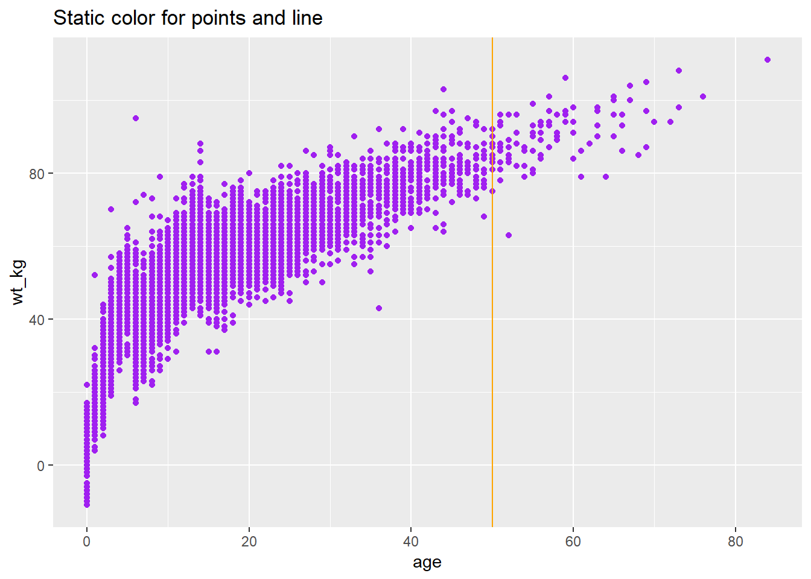 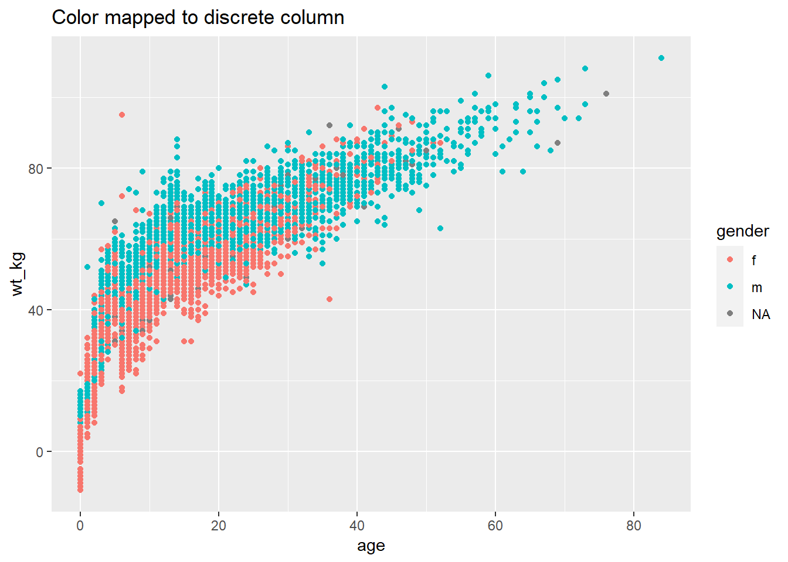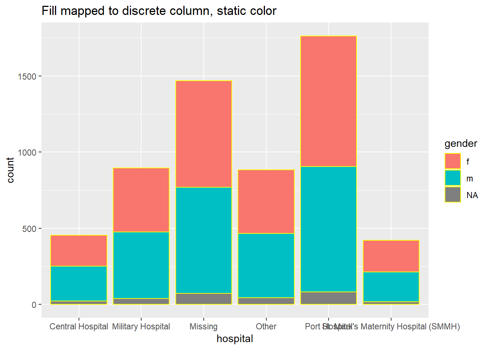
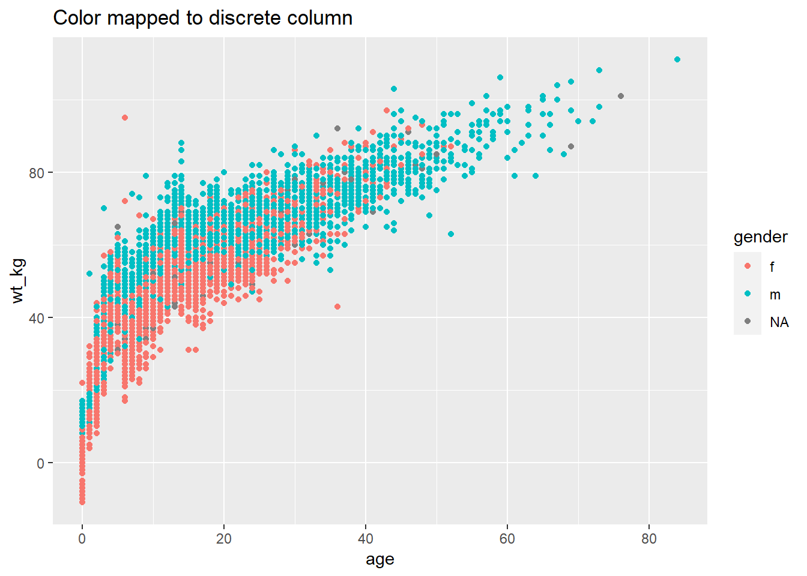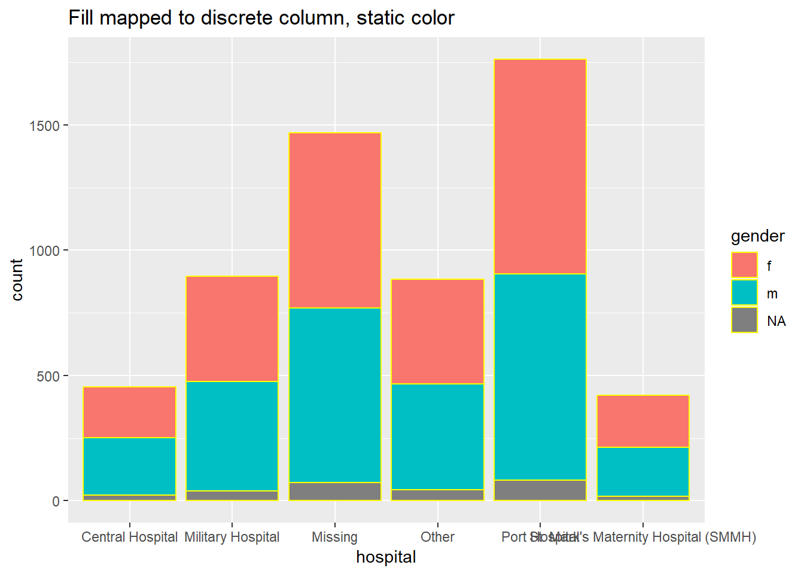
Ölçekler
Bir sütunu bir çizim estetiğine eşlediğinizde (örneğin, x =, y =, fill =, color =…), grafiğiniz bir ölçek/lejand kazanacaktır. Yukarıda, atanan sütunun sınıfına bağlı olarak ölçeğin sürekli, ayrık, tarih vb. değerlerinin nasıl olabileceğini görün. Sütunlara eşlenmiş birden fazla estetiğiniz varsa, arsanızın birden çok ölçeği olacaktır.
Uygun scales_() fonksiyonu ile terazileri kontrol edebilirsiniz. ggplot()’un ölçek fonksiyonlarının şu şekilde yazılmış 3 bölümü vardır: scale_AESTHETIC_METHOD().
- İlk kısım olan
scale_()düzeltildi. - İkinci kısım olan ESTETİK, ölçeği ayarlamak istediğiniz estetik olmalıdır (
_fill_,_shape_,_color_,_size_,_alpha_…) - buradaki seçenekler de ‘x’ ve ‘y’ içerir. - Üçüncü kısım olan YÖNTEM, sütunun sınıfına ve nasıl kontrol etmek istediğine bağlı olarak
_discrete(),continuous(),_date(),_gradient()veya_manual()olacaktır. Başkaları da var, ancak bunlar en sık kullanılanlardır.
Tartı için doğru işlevi kullandığınızdan emin olun! Aksi takdirde, ölçek komutunuz hiçbir şeyi değiştirmiş gibi görünmeyecektir. Birden fazla teraziniz varsa, bunları ayarlamak için birden fazla terazi işlevi kullanabilirsiniz! Örneğin:
Ölçek değişkenleri
Bazı örtüşmeler olsa da, her tür ölçeğin kendi değişkenleri vardır. Fonksiyon değişkeni belgelerini görmek için R konsolunda ?scale_color_discrete gibi fonksiyonu sorgulayabilirsiniz.
Sürekli ölçekler için, ‘seq()’ ile bir değerler dizisi sağlamak için ‘breaks =’ kullanın (aşağıdaki örnekte gösterildiği gibi ‘to =’, ‘from =’ ve ‘by =’ alın. Eksenlerin etrafındaki dolgu alanını ortadan kaldırmak için “expand= c(0,0)” değerini ayarlayın (bu herhangi bir “x” veya “y” ölçeğinde kullanılabilir.
Ayrık ölçekler için, seviye görünümünün sırasını breaks = ile ve değerlerin nasıl görüntüleneceğini labels = değişkeniyle ayarlayabilirsiniz. Bunların her birine bir karakter vektörü sağlayın (aşağıdaki örneğe bakın). Ayrıca, “na.translate = FALSE” ayarını yaparak “NA”yı kolayca bırakabilirsiniz.
Tarih ölçeklerinin nüansları, Salgın eğrileri sayfasında daha kapsamlı bir şekilde ele alınmaktadır.
Manuel ayarlamalar
En kullanışlı püf noktalardan biri, renkleri açıkça istediğiniz gibi atamak için “manuel” ölçekleme fonksiyonlarını kullanmaktır. Bunlar, “scale_xxx_manual()” sözdizimine sahiptir(ör. “scale_colour_manual()” veya “scale_fill_manual()”). Aşağıdaki bağımsız değişkenlerin her biri aşağıdaki kod örneğinde gösterilmiştir.
-
values =değişkeniyle veri değerlerine renkler atayın - ‘NA’ için ‘na.value =’ ile bir renk belirtin
- Göstergede değerlerin nasıl yazılacağını
labels =değişkeni ile değiştirin - Gösterge başlığını
name =ile değiştirin
Aşağıda, bir çubuk grafiği oluşturuyoruz ve varsayılan olarak nasıl göründüğünü gösteriyoruz ve ardından üç ölçek ayarlıyoruz - sürekli y ekseni ölçeği, ayrık x ekseni ölçeği ve dolgunun manuel olarak ayarlanması (iç çubuk rengi).
# TEMEL - ölçek ayarı yok
ggplot(data = linelist)+
geom_bar(mapping = aes(x = outcome, fill = gender))+
labs(title = "Baseline - no scale adjustments")
# AYARLANAN ÖLÇEKLER
ggplot(data = linelist)+
geom_bar(mapping = aes(x = outcome, fill = gender), color = "black")+
theme_minimal()+ # arka planı basitleştir
scale_y_continuous( # y ekseni için sürekli ölçek (sayılar)
expand = c(0,0), # dolgu yok
breaks = seq(from = 0,
to = 3000,
by = 500))+
scale_x_discrete( # x ekseni için ayrık ölçek (cinsiyet)
expand = c(0,0), # dolgu yok
drop = FALSE, # tüm faktör seviyelerini göster (verilerde olmasa bile)
na.translate = FALSE, # Boş sonuçlarını grafikten kaldır
labels = c("Died", "Recovered"))+ # Değerlerin gösterimini değiştir
scale_fill_manual( # Dolguyu manuel olarak belirtin (çubuk iç rengi)
values = c("m" = "violetred", # renk atamak için verilerdeki referans değerleri
"f" = "aquamarine"),
labels = c("m" = "Male", # lejandı yeniden etiketleyin (hataları önlemek için "=" atamasını kullanın)
"f" = "Female",
"Missing"),
name = "Gender", # lejand başlığı
na.value = "grey" # eksik değerler için bir renk atama
)+
labs(title = "Adjustment of scales") # Doldurma açıklamasının başlığını ayarlayınSürekli eksen ölçekleri
Veriler çizim eksenlerine eşlendiğinde, bunlar da ölçek komutlarıyla ayarlanabilir. Yaygın bir örnek, sürekli veriler içeren bir sütuna eşlenen bir eksenin (ör. y ekseni) görüntüsünü ayarlamaktır.
scale_y_continuous() kullanarak ggplot’taki değerlerin kesintilerini veya gösterimini ayarlamak isteyebiliriz. Yukarıda belirtildiği gibi, ölçek boyunca “kesmeler” olarak hizmet edecek bir değerler dizisi sağlamak için “kesmeler =” bağımsız değişkenini kullanın. Bunlar sayıların görüntüleneceği değerlerdir. Bu bağımsız değişkene, istenen kesme değerlerini içeren bir “c()” vektörü sağlayabilir veya R tabanı fonksiyonu “seq()” kullanarak düzenli bir sayı dizisi sağlayabilirsiniz. Bu ‘seq()’ fonksiyonu ‘to =’, ‘from =’ ve ‘by =’ kabul eder.
# TEMEL - ölçek ayarı yok
ggplot(data = linelist)+
geom_bar(mapping = aes(x = outcome, fill = gender))+
labs(title = "Baseline - no scale adjustments")
ggplot(data = linelist)+
geom_bar(mapping = aes(x = outcome, fill = gender))+
scale_y_continuous(
breaks = seq(
from = 0,
to = 3000,
by = 100)
)+
labs(title = "Adjusted y-axis breaks")

Yüzdeleri göster
Orijinal veri değerleriniz oranlarsa, aşağıda gösterildiği gibi ölçekler komutunuzda labels = scales::percent sağlayarak bunları kolayca “%” ile yüzdeler olarak görüntüleyebilirsiniz.
Bir alternatif, değerleri karaktere dönüştürmek ve sona “%” karakteri eklemek olsa da, verileriniz artık sürekli sayısal değerler olmayacağından bu yaklaşım sorunlara yol açacaktır.
# Orjinal y ekseni oranları
#############################
linelist %>% # satır listesi ile başlama
group_by(hospital) %>% # veriyi hastaneye göre gruplandırma
summarise( # özet kolonlar oluşturma
n = n(), # gruptaki toplam satır sayısı
deaths = sum(outcome == "Death", na.rm=T), # gruptaki ölüm sayısı
prop_death = deaths/n) %>% # gruptaki ölüm oranı
ggplot( # çizime başlama
mapping = aes(
x = hospital,
y = prop_death))+
geom_col()+
theme_minimal()+
labs(title = "Display y-axis original proportions")
# Y ekseni oranlarını yüzdelik olarak gösterme
########################################
linelist %>%
group_by(hospital) %>%
summarise(
n = n(),
deaths = sum(outcome == "Death", na.rm=T),
prop_death = deaths/n) %>%
ggplot(
mapping = aes(
x = hospital,
y = prop_death))+
geom_col()+
theme_minimal()+
labs(title = "Display y-axis as percents (%)")+
scale_y_continuous(
labels = scales::percent
)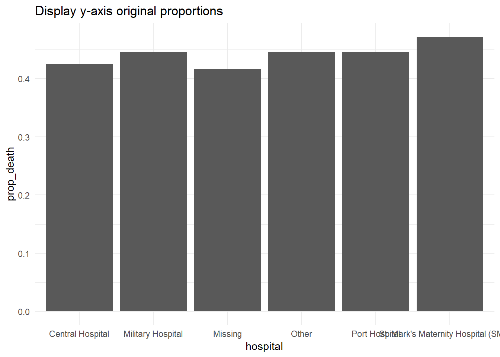
Logaritmik ölçeği
Sürekli bir ekseni logaritmik ölçeğine dönüştürmek için, ölçek komutuna trans = "log2" ekleyin. Örnek olarak, ilgili ‘preparedness_index’ ve kümülatif vaka değerleri ile bölgelerin bir veri çerçevesini oluşturuyoruz.
plot_data <- data.frame(
region = c("A", "B", "C", "D", "E", "F", "G", "H", "I"),
preparedness_index = c(8.8, 7.5, 3.4, 3.6, 2.1, 7.9, 7.0, 5.6, 1.0),
cases_cumulative = c(15, 45, 80, 20, 21, 7, 51, 30, 1442)
)
plot_data## region preparedness_index cases_cumulative
## 1 A 8.8 15
## 2 B 7.5 45
## 3 C 3.4 80
## 4 D 3.6 20
## 5 E 2.1 21
## 6 F 7.9 7
## 7 G 7.0 51
## 8 H 5.6 30
## 9 I 1.0 1442“I” bölgesi için kümülatif vakalar, diğer tüm bölgelerden çarpıcı biçimde daha fazladır. Bunun gibi durumlarda, okuyucunun daha az kümülatif vaka ile bölgeler arasındaki farklılıkları görebilmesi için bir logaritmik ölçeği kullanarak y eksenini görüntülemeyi seçebilirsiniz.
# Orijinal y ekseni
preparedness_plot <- ggplot(data = plot_data,
mapping = aes(
x = preparedness_index,
y = cases_cumulative))+
geom_point(size = 2)+ # her bölgeye nokta
geom_text(
mapping = aes(label = region),
vjust = 1.5)+ # yazı etiketleri ekleme
theme_minimal()
preparedness_plot # orijinal grafiği yazdıe
# dönüştürülmüş y ekseni ile yazdır
preparedness_plot+ # yukarıda kaydedilen grafik ile başlayın
scale_y_continuous(trans = "log2") # y ekseni için dönüşüm ekle 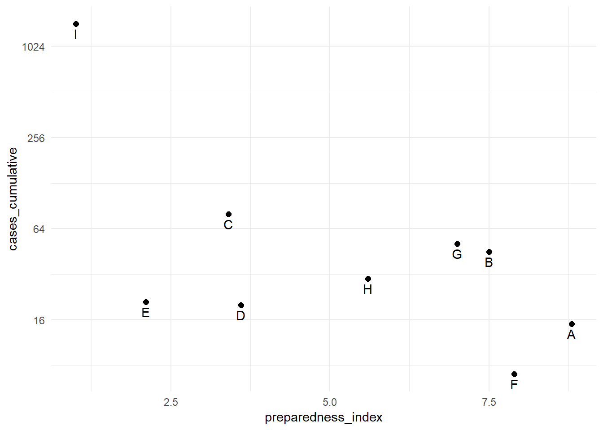
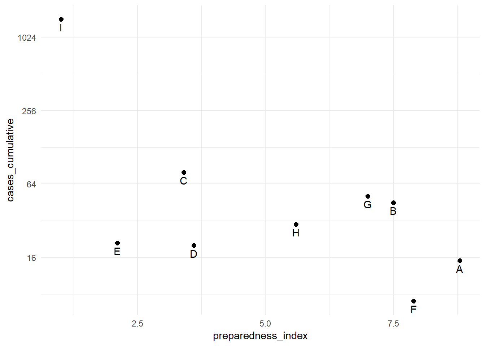
Gradyan ölçekleri
Dolgu gradyan ölçekleri ek nüanslar içerebilir. Varsayılanlar genellikle oldukça hoştur, ancak değerleri, kesmeleri vb. ayarlamak isteyebilirsiniz.
Sürekli bir renk skalasının nasıl ayarlanacağını göstermek için, vakaların yaşlarını ve kaynak vakalarını içeren Temaslı izlemi sayfasından bir veri seti kullanacağız.
case_source_relationships <- rio::import(here::here("data", "godata", "relationships_clean.rds")) %>%
select(source_age, target_age) Aşağıda, bir “hücresel” ısı karosu yoğunluk grafiği üretiyoruz. Nasıl olduğunu detaylandırmayacağız (yukarıdaki paragraftaki bağlantıya bakabilirsiniz) ancak renk skalasını nasıl ayarlayabileceğimize odaklanacağız. stat_density2d() ggplot2 fonksiyonu hakkında buradan daha fazla bilgi edinebilirsiniz. fill ölçeğinin nasıl sürekli olduğuna dikkat edin.
trans_matrix <- ggplot(
data = case_source_relationships,
mapping = aes(x = source_age, y = target_age))+
stat_density2d(
geom = "raster",
mapping = aes(fill = after_stat(density)),
contour = FALSE)+
theme_minimal()Şimdi doldurma ölçeğinde bazı varyasyonlar gösteriyoruz:
trans_matrix
trans_matrix + scale_fill_viridis_c(option = "plasma") 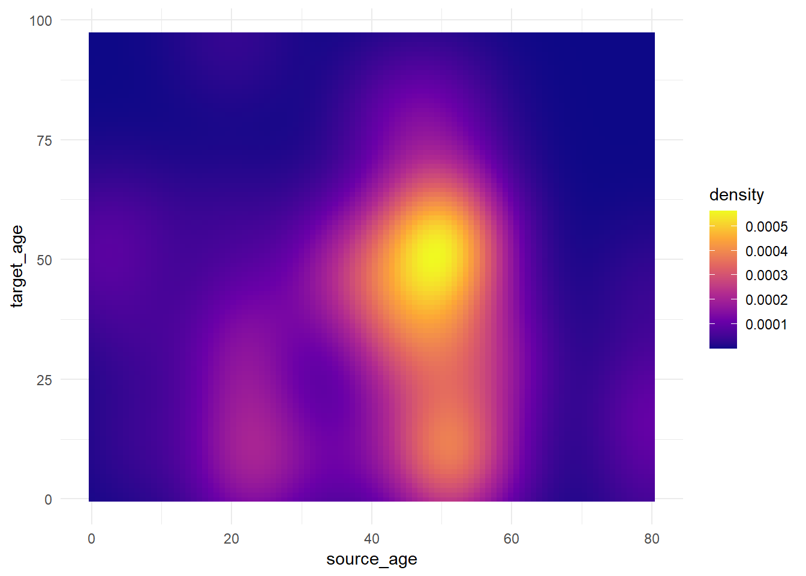
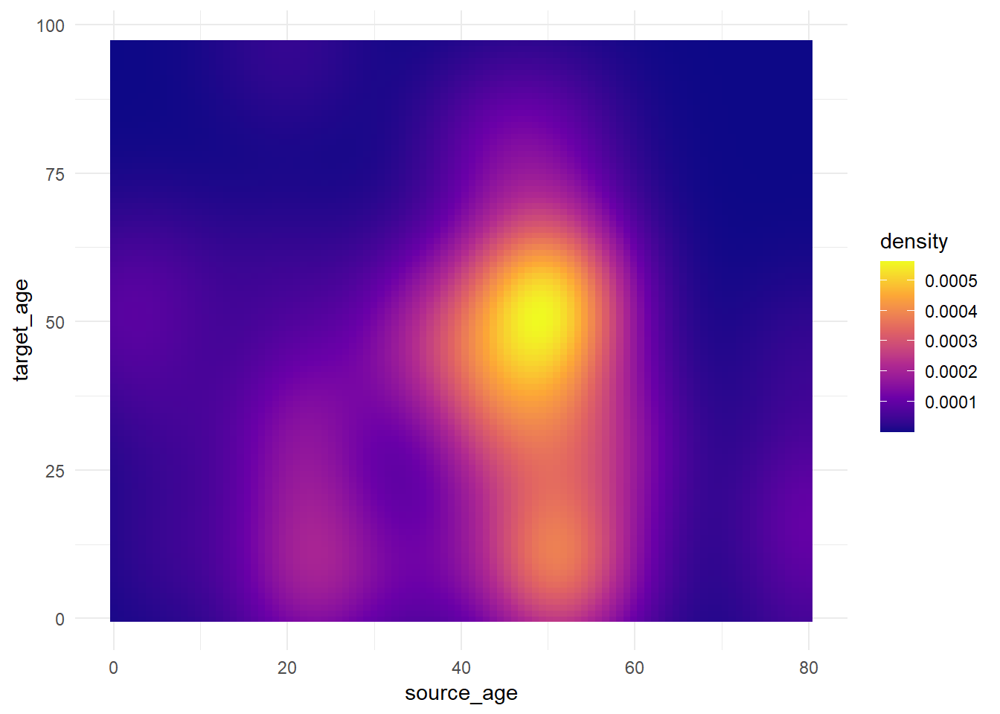
Şimdi ölçeğin kırılma noktalarını ayarlamanın bazı örneklerini gösteriyoruz:
-
scale_fill_gradient()iki rengi kabul eder (yüksek/düşük) -
scale_fill_gradientn()herhangi bir uzunluktaki bir renk vektörünü “değerler =” olarak kabul eder (ara değerler eklemlenmiş olacaktır) -
scales::rescale()renklerin gradyan boyunca nasıl konumlandırılacağını ayarlamak için kullanılır. Konum vektörünüzü 0 ile 1 arasında olacak şekilde yeniden ölçeklendirir.
trans_matrix +
scale_fill_gradient( # Çift taraflı gradyan ölçeği
low = "aquamarine", # düşük değer
high = "purple", # yüksek değer
na.value = "grey", # Boş için değer
name = "Density")+ # Lejand Başlığı
labs(title = "Manually specify high/low colors")
# Ölçeklendirmek 3+ renk
trans_matrix +
scale_fill_gradientn( # 3 renkli ölçek (low/mid/high)
colors = c("blue", "yellow","red") # y dönüş için yeterli
)+
labs(title = "3-color scale")
# Ölçek boyunca renklerin yerleşimini ayarlamak için rescale() kullanımı
trans_matrix +
scale_fill_gradientn( # herhangi bir sayıda rengi sağlamak
colors = c("blue", "yellow","red", "black"),
values = scales::rescale(c(0, 0.05, 0.07, 0.10, 0.15, 0.20, 0.3, 0.5)) # renkler için konumlar 0 ile 1 arasında yeniden ölçeklenir
)+
labs(title = "Colors not evenly positioned")
# dolgu rengini alan kesme değerleri için sınırların kullanılması
trans_matrix +
scale_fill_gradientn(
colors = c("blue", "yellow","red"),
limits = c(0, 0.0002))+
labs(title = "Restrict value limits, resulting in grey space")
 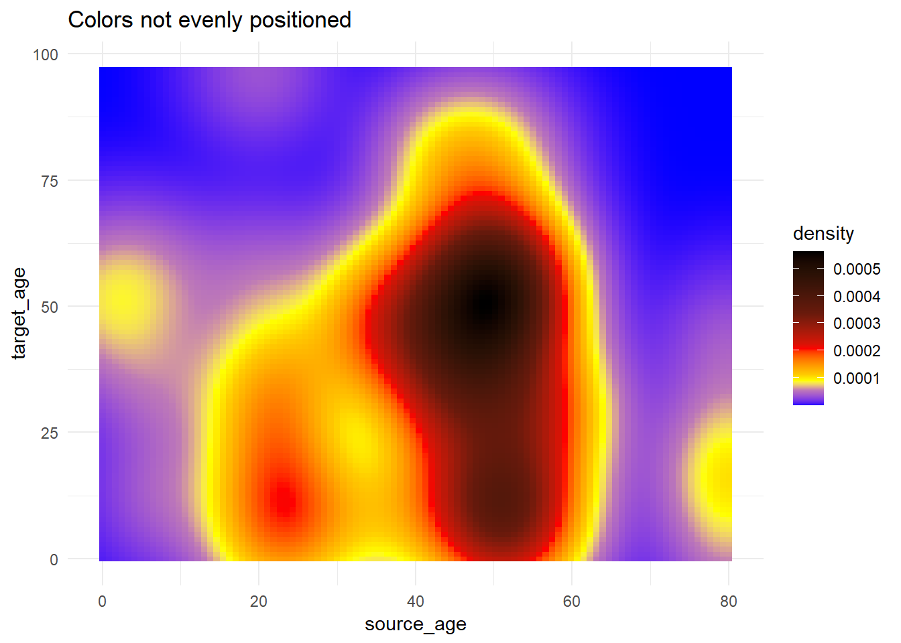
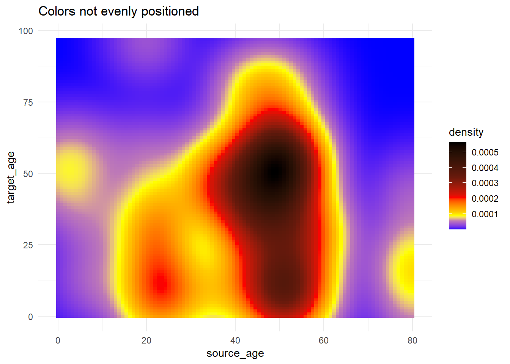
Paletler
Colorbrewer ve Viridis
Daha genel olarak, önceden tanımlanmış paletler istiyorsanız, “scale_xxx_brewer” veya “scale_xxx_viridis_y” fonksiyonlarını kullanabilirsiniz.
‘brewer’ fonksiyonları colorbrewer.org paletlerinden çizim yapabilir.
‘viridis’ fonksiyonları, viridis (renk körü dostu!) paletlerinden alınmıştır, bunlar “hem renkli hem de siyah-beyaz olarak algısal olarak tek biçimli renk haritaları sağlar. Ayrıca, yaygın renk körlüğü biçimlerine sahip izleyiciler tarafından algılanmak üzere tasarlanmıştır. (daha fazlasını buradan ve buradan okuyabilirsiniz). Fonksiyonun sonunda bunu belirterek paletin ayrık, sürekli veya ikili olup olmadığını tanımlayın (örneğin ayrık ‘scale_xxx_viridis_d’ dir).
Grafiğinizi bu renk körlüğü simülatöründe test etmeniz önerilir. Kırmızı/yeşil renk düzeniniz varsa, bunun yerine soğuk (kırmızı-mavi) bir şema deneyin burada
İşte çeşitli renk şemaları kullanan [ggplot basics] sayfasından bir örnek.
symp_plot <- linelist %>% # satırlistesi ile başla
select(c(case_id, fever, chills, cough, aches, vomit)) %>% # sütunları seç
pivot_longer( # daha uzun döndür
cols = -case_id,
names_to = "symptom_name",
values_to = "symptom_is_present") %>%
mutate( # eksik verileri tamamla
symptom_is_present = replace_na(symptom_is_present, "unknown")) %>%
ggplot( # ggplot'a başla
mapping = aes(x = symptom_name, fill = symptom_is_present))+
geom_bar(position = "fill", col = "black") +
theme_classic() +
theme(legend.position = "bottom")+
labs(
x = "Symptom",
y = "Symptom status (proportion)"
)
symp_plot # kendinden olan renkleri yazdır
#################################
# el ile özelleştirdiğin renkleri yazdır
symp_plot +
scale_fill_manual(
values = c("yes" = "black", # renkleri açıkça tanımla
"no" = "white",
"unknown" = "grey"),
breaks = c("yes", "no", "unknown"), # faktörleri doğru sırala
name = "" # lejandı başlıksız olarak ayarla
)
#################################
# viridis ile ayrık renklerle yazdırın
symp_plot +
scale_fill_viridis_d(
breaks = c("yes", "no", "unknown"),
name = ""
) 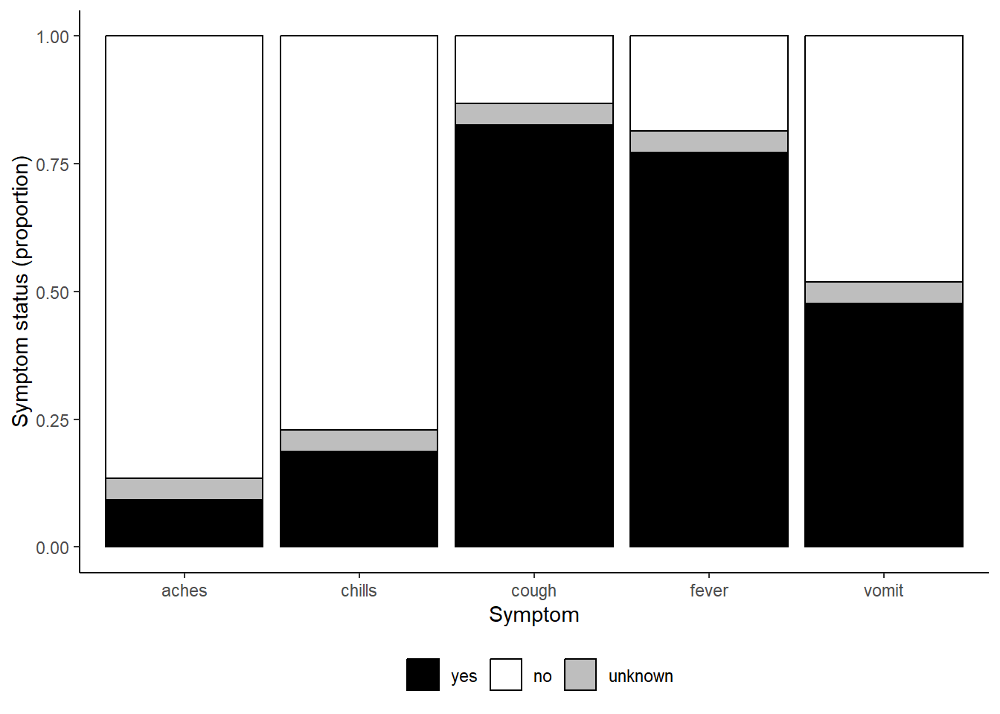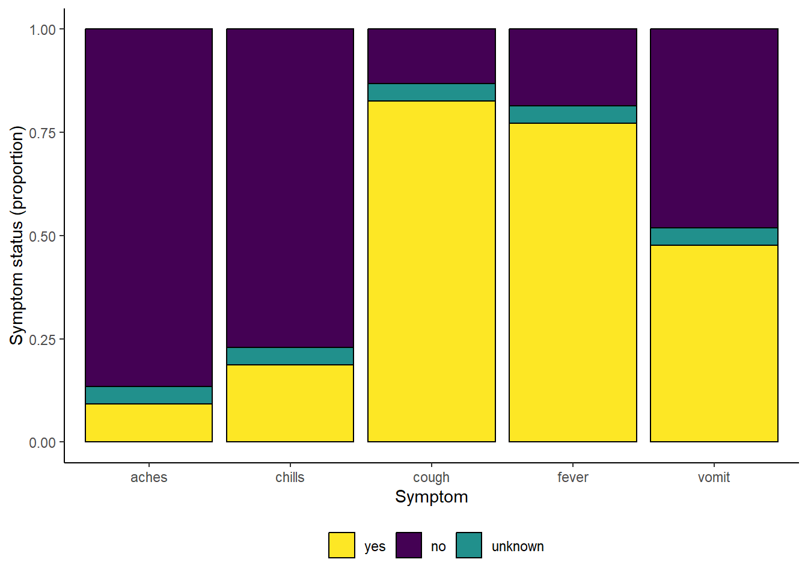
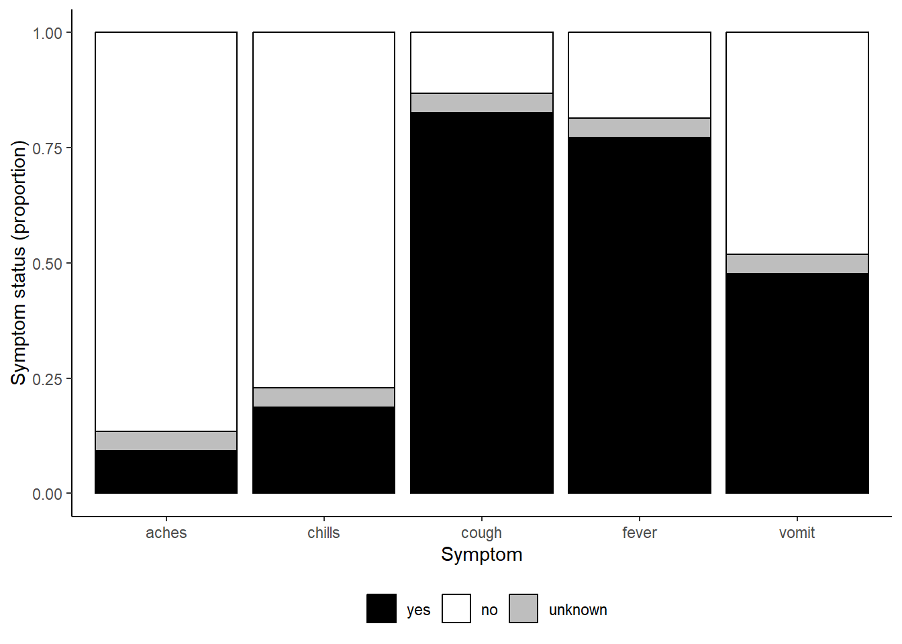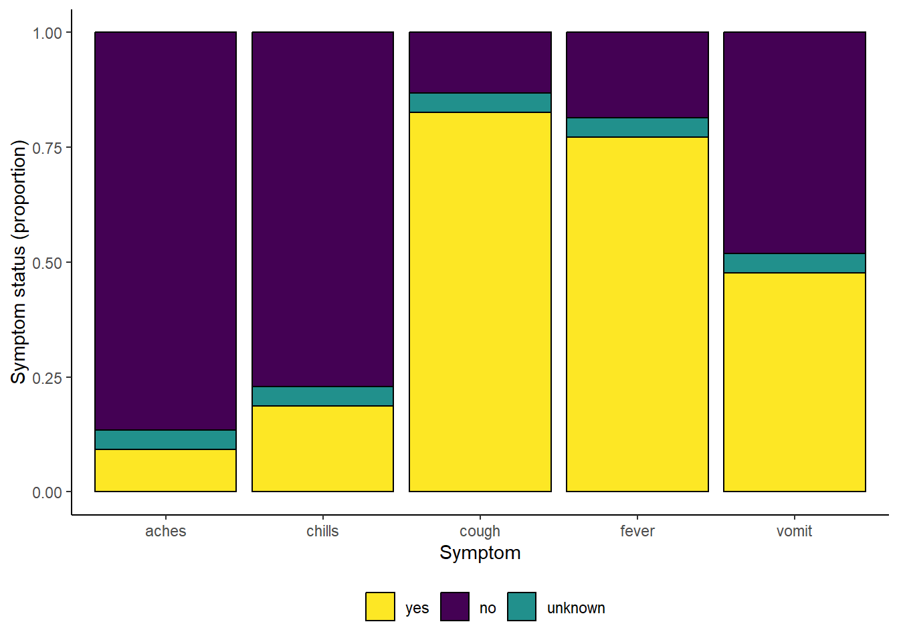
31.3 Ayrık değişkenlerin sırasını değiştirmek
Kesikli değişkenlerin göründüğü sırayı değiştirmek, genellikle “ggplot2” grafiklerinde yeni olan kişiler için anlaşılması zordur. Bunu nasıl yapacağınızı anlamak kolaydır, ancak ’ggplot2’nin başlık altında ayrık değişkenleri nasıl ele aldığını anladıktan sonra. Genel olarak konuşursak, ayrı bir değişken kullanılıyorsa, otomatik olarak bir “faktör” türüne dönüştürülür - bu, faktörleri varsayılan olarak alfabetik sıraya göre sıralar. Bunu halletmek için, grafikte görünmesini istediğiniz sırayı yansıtacak şekilde faktör düzeylerini yeniden sıralamanız yeterlidir. “Faktör” nesnelerinin nasıl yeniden sıralanacağı hakkında daha ayrıntılı bilgi için kılavuzun faktör bölümüne bakabilirsiniz.
Yaş gruplarını kullanarak yaygın bir örneğe bakabiliriz - varsayılan olarak 5-9 yaş grubu yaş gruplarının ortasına yerleştirilir (alfanumerik sıra verilir), ancak faktörleri yeniden seviyelendirerek onu 0-4 yaş grubunun arkasına taşıyabiliriz.
ggplot(
data = linelist %>% drop_na(age_cat5), # age_cat5'in eksik olduğu satırları kaldırın
mapping = aes(x = fct_relevel(age_cat5, "5-9", after = 1))) + # faktörü yeniden seviyelendirin
geom_bar() +
labs(x = "Age group", y = "Number of hospitalisations",
title = "Total hospitalisations by age group") +
theme_minimal()31.3.0.1 ggthemr
Ayrıca ggthemr paketini kullanmayı düşünün. Bu paketi buradaki talimatları kullanarak Github’dan indirebilirsiniz. Estetik açıdan çok hoş paletler sunar, ancak bunların tipik olarak 7 veya 8’den fazla renk istiyorsanız sınırlayıcı olabilecek maksimum sayıda değere sahip olduğunu unutmayın.
31.4 Kontur çizgileri
Kontur grafikleri, birbirini kapsayabilecek birçok noktanız olduğunda (“üst çizim”) yardımcı olur. Yukarıda kullanılan durum-kaynak verileri tekrar çizilir, ancak daha basit bir şekilde ‘stat_density2d()’ ve ‘stat_density2d_filled()’ kullanılarak - bir topografik harita gibi - ayrı kontur seviyeleri elde edilir. İstatistikler hakkında daha fazla bilgiyi buradan okuyabilirsiniz.
case_source_relationships %>%
ggplot(aes(x = source_age, y = target_age))+
stat_density2d()+
geom_point()+
theme_minimal()+
labs(title = "stat_density2d() + geom_point()")
case_source_relationships %>%
ggplot(aes(x = source_age, y = target_age))+
stat_density2d_filled()+
theme_minimal()+
labs(title = "stat_density2d_filled()")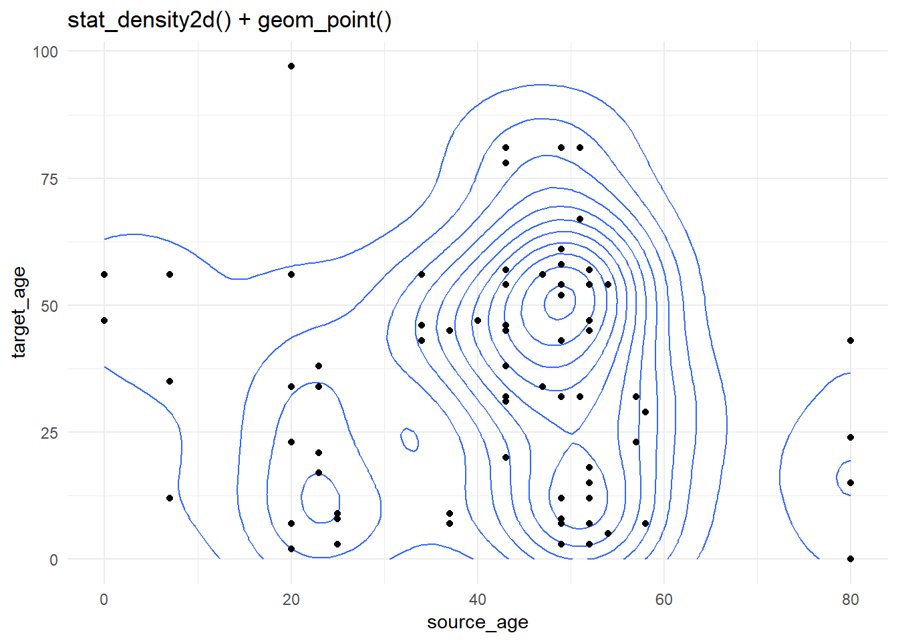
31.5 Marjinal dağılımlar
Bir “geom_point()” dağılım grafiğinin kenarlarındaki dağılımları göstermek için, ggExtra paketini ve onun “ggMarginal()” fonksiyonunu kullanabilirsiniz. Orijinal ggplot’unuzu bir nesne olarak kaydedin, ardından aşağıda gösterildiği gibi ggMarginal() öğesine iletin. İşte temel değikenler:
-
type =değerini “histogram”, “density” “boxplot”, “violin” veya “densigram” olarak belirtmelisiniz. - Varsayılan olarak, her iki eksen için de marjinal grafikler görünecektir. Yalnızca bir tane istiyorsanız,
margins =öğesini “x” veya “y” olarak ayarlayabilirsiniz. - Diğer isteğe bağlı argümanlar arasında
fill =(çubuk rengi),color =(çizgi rengi),size =(sınır boyutuna göre grafik boyutu, dolayısıyla daha büyük sayı marjinal grafiği küçültür). -
xparams =veyparams =için eksene özel başka değişkenler sağlayabilirsiniz. Örneğin, aşağıda gösterildiği gibi farklı histogram kutusu boyutlarına sahip olunablir.
Marjinal grafiklerin grupları yansıtmasını sağlayabilirsiniz (“ggplot()” eşleme estetiğinizde “color =” a atanan sütunlar). Bu durumda, “ggMarginal()” bağımsız değişkeni “groupColour =” veya “groupFill =” aşağıda gösterildiği gibi “TRUE” olarak ayarlayın.
Detaylı bilgiye R fonksiyonu ?ggMarginal veya Bu gösterim, R Graph Gallery yoluyla erişebilirsiniz.
# ggExtra'yı kurun/yükleyin
pacman::p_load(ggExtra)
# Ağırlık ve yaşın temel saçılım grafiği
scatter_plot <- ggplot(data = linelist)+
geom_point(mapping = aes(y = wt_kg, x = age)) +
labs(title = "Scatter plot of weight and age")Marjinal histogramlar eklemek için type = "histogram" kullanın. Sıralanmış histogramları almak için isteğe bağlı olarak “groupFill = TRUE” ayarını yapabilirsiniz.
# histogramlar ile
ggMarginal(
scatter_plot, # marjinal histogramlar ekle
type = "histogram", # histogramları belirtmek
fill = "lightblue", # çubuk doldurma
xparams = list(binwidth = 10), # x ekseni marjinali için diğer parametreler
yparams = list(binwidth = 5)) # y ekseni marjinal için diğer parametreler
Gruplandırılmış/renkli değerlerle marjinal yoğunluk grafiği:
# Sonuca göre renklendirilmiş dağılım grafiği
# Sonuç sütunu ggplot'ta renk olarak atanır. (groupFill in ggMarginal TRUE olarak ayarlandı)
scatter_plot_color <- ggplot(data = linelist %>% drop_na(gender))+
geom_point(mapping = aes(y = wt_kg, x = age, color = gender)) +
labs(title = "Scatter plot of weight and age")+
theme(legend.position = "bottom")
ggMarginal(scatter_plot_color, type = "density", groupFill = TRUE)
Marjinal grafiğin göreli boyutunu ayarlamak için size = değişkenini ayarlayın. Daha küçük sayı, daha büyük bir marjinal grafik yapar. Ayrıca color= ve aşağıda, yalnızca bir eksende görünmesi için “margins =” değişkeni gösterimi ile bir marjinal kutu grafiği verilmiştir:
# kutu grafiği ile
ggMarginal(
scatter_plot,
margins = "x", # sadece x ekseni marjinal grafiğini göster
type = "boxplot") 
31.6 Akıllı Etiketleme
ggplot2’de çizimlere metin eklemek de mümkündür. Bununla birlikte, metin etiketlerinin genellikle bir grafikteki veri noktalarıyla çatıştığı, dağınık veya okunması zor görünmelerine neden olan dikkate değer bir sınırlama mevcuttur. Temel pakette bununla başa çıkmanın ideal bir yolu yoktur, ancak bununla uğraşmayı çok basit hale getiren ggrepel olarak bilinen bir ggplot2 eklentisi vardır.
ggrepel paketi, “geom_label()” ve “geom_text()” fonksiyonlarının yerine geçen “geom_label_repel()” ve “geom_text_repel()” adlı iki yeni fonksiyon sağlar. Düzgün etiketler üretmek için bunları kullanabilirsiniz. Fonksiyon içinde, “aes()” estetiğini her zaman olduğu gibi eşleştirin, ancak görüntülemek istediğiniz değerleri (örneğin hasta kimliği veya adı vb.) içeren bir sütun adı sağladığınız “label =” bağımsız değişkenini eklemiş olun. Aşağıda gösterildiği gibi str_glue() içindeki sütunları ve yeni satırları (\n) birleştirerek daha karmaşık etiketler oluşturabilirsiniz.
Birkaç ipucu:
- Her zaman çizgi parçaları çizmek için “min.segment.length = 0” veya onları asla çizmemek için “min.segment.length = Inf” kullanın
- Metin boyutunu ayarlamak için
aes()dışındasize =kullanın - Etiketler ve ilgili noktaları arasındaki itme derecesini değiştirmek için
force =kullanın (varsayılan 1’dir) - Etiketin değere göre renklendirilmesi için ‘aes()’ içine ‘fill =’ ekleyin
- Lejandda bir “a” harfi görünebilir - onu kaldırmak için
guides(fill = guide_legend(override.aes = aes(color = NA)))+ekleyin
- Lejandda bir “a” harfi görünebilir - onu kaldırmak için
Daha fazlası için ayrıntılı şu eğitime başvurabilirsiniz. eğitim.
pacman::p_load(ggrepel)
linelist %>% # vaka listesi ile başla
group_by(hospital) %>% # hastaneye göre gruplandır
summarise( # hastane başına özet değerlerle yeni veri seti oluşturun
n_cases = n(), # hastane başına vaka sayısı
delay_mean = round(mean(days_onset_hosp, na.rm=T),1), # hastane başına ortalama gecikme
) %>%
ggplot(mapping = aes(x = n_cases, y = delay_mean))+ # veri çerçevesini ggplot'a gönder
geom_point(size = 2)+ # puan ekle
geom_label_repel( # nokta etiketleri ekle
mapping = aes(
label = stringr::str_glue(
"{hospital}\n{n_cases} cases, {delay_mean} days") # etiket nasıl görüntülenir
),
size = 3, # etiketlerdeki metin boyutu
min.segment.length = 0)+ # tüm çizgi parçalarını göster
labs( # eksen etiketleri ekle
title = "Mean delay to admission, by hospital",
x = "Number of cases",
y = "Mean delay (days)")Grafiğin her bir “geom” katmanı için farklı “data =” sağlamak üzere standart “ggplot()” sözdizimini kullanarak, veri noktalarının yalnızca bir alt kümesini etiketleyebilirsiniz. Aşağıda, tüm durumlar çizilmiştir, ancak yalnızca birkaçı etiketlenmiştir.
ggplot()+
# Tüm noktalar gri
geom_point(
data = linelist, # bu katmana sağlanan tüm veriler
mapping = aes(x = ht_cm, y = wt_kg),
color = "grey",
alpha = 0.5)+ # gri ve yarı şeffaf
# Birkaç nokta siyah
geom_point(
data = linelist %>% filter(days_onset_hosp > 15), # bu katmana sağlanan filtrelenmiş veriler
mapping = aes(x = ht_cm, y = wt_kg),
alpha = 1)+ # varsayılan siyah, şeffaf değil
# birkaç nokta için nokta etiketleri
geom_label_repel(
data = linelist %>% filter(days_onset_hosp > 15), # etiketler için verileri filtreleyin
mapping = aes(
x = ht_cm,
y = wt_kg,
fill = outcome, # sonuca göre etiket rengi
label = stringr::str_glue("Delay: {days_onset_hosp}d")), # str_glue() ile oluşturulan etiket
min.segment.length = 0) + # hepsi için çizgi parçalarını göster
# "a" harfini gösterge kutularından çıkarın
guides(fill = guide_legend(override.aes = aes(color = NA)))+
# eksen etiketleri
labs(
title = "Cases with long delay to admission",
y = "weight (kg)",
x = "height(cm)")31.7 Zaman eksenleri
ggplot’ta zaman eksenleriyle çalışmak göz korkutucu görünebilir, ancak birkaç temel fonksiyonla çok kolay hale getirilmiştir. Saat veya tarihle çalışırken, doğru değişkenlerin tarih veya tarih-saat sınıfı olarak biçimlendirildiğinden emin olmanız gerektiğini unutmayın - bu konuda daha fazla bilgi için Tarihlerle çalışma sayfasına veya örnekler için Salgın eğrileri sayfasına (ggplot bölümü) bakabilirsiniz.
“ggplot2”de tarihlerle çalışmak için en kullanışlı fonksiyon kümesi, ölçeklerdir (‘scale_x_date()’, ‘scale_x_datetime()’) ve bunların aynı kökteki y ekseni fonksiyonları). Eksen etiketlerine ne sıklıkla sahip olduğunuzu ve eksen etiketlerinin nasıl biçimlendirileceğini tanımlamanıza olanak tanır. Tarihlerin nasıl biçimlendirileceğini öğrenmek için tarihlerle çalışma bölümüne tekrar bakın! Tarihlerin nasıl görüneceğini belirtmek için “date_breaks” ve “date_labels” bağımsız değişkenlerini kullanabilirsiniz:
“date_breaks”, eksen kırılmalarının ne sıklıkta gerçekleşeceğini belirlemenize olanak tanır - buraya bir dize iletebilirsiniz (örneğin ““3 ay”” veya “2 gün”’)
“date_labels”, tarihlerin gösterildiği biçimi tanımlamanıza olanak tanır. Bu bağımsız değişkenlere bir tarih biçimi dizesi iletebilirsiniz (örneğin ““%b-%d-%Y”`):
# mevcut olduğunda başlangıç tarihine göre salgın eğrisi yapın
ggplot(linelist, aes(x = date_onset)) +
geom_histogram(binwidth = 7) +
scale_x_date(
# 1 ayda 1 mola
date_breaks = "1 months",
# etiketler aydan sonra tarihi göstermelidir
date_labels = "%b %d"
) +
theme_classic()
31.8 Vurgulama
Bir grafikteki belirli öğelerin vurgulanması, bir değişkenin belirli bir örneğine dikkat çekmenin ve aynı zamanda tüm veri kümesinin dağılımı hakkında bilgi sağlamanın yararlı bir yoludur. Bu, ggplot2 tabanında kolayca yapılmasa da, bunu yapmanıza yardımcı olabilecek gghighlight olarak bilinen harici bir paket vardır. Bunun ggplot sözdizimi içinde kullanımı kolaydır.
gghighlight paketi, bu efekti elde etmek için ‘gghighlight()’ fonksiyonunu kullanır. Kullanmak için, fonksiyona mantıklı bir ifade sağlayın - bunun oldukça esnek sonuçları olabilir, ancak burada satır listemizdeki vakaların yaş dağılımının bir örneğini sonuca göre vurgulayarak göstereceğiz.
# gghighlight yükle
library(gghighlight)
# sonuç değişkeninde NA değerlerini bilinmeyenle değiştirin
linelist <- linelist %>%
mutate(outcome = replace_na(outcome, "Unknown"))
# yaşa göre tüm vakaların bir histogramını üretmek
ggplot(
data = linelist,
mapping = aes(x = age_years, fill = outcome)) +
geom_histogram() +
gghighlight::gghighlight(outcome == "Death") # Hastanın öldüğü durumları vurgulayın.
Bu aynı zamanda faset fonksiyonları ile de iyi çalışır - kullanıcının, faset için geçerli olmayan vurgulanmış arka plan verileriyle faset grafikleri oluşturmasını sağlar! Aşağıda vakaları haftaya göre sayıyor ve hastaneye göre salgın eğrilerini çiziyoruz (“color =” ve “facet_wrap()”, “hastane” sütununa ayarlı).
# yaşa göre tüm vakaların bir histogramını üretmek
linelist %>%
count(week = lubridate::floor_date(date_hospitalisation, "week"),
hospital) %>%
ggplot()+
geom_line(aes(x = week, y = n, color = hospital))+
theme_minimal()+
gghighlight::gghighlight() + # Hastanın öldüğü örnekleri vurgulayın
facet_wrap(~hospital) # sonuca göre yönler yapmak31.9 Birden çok veri kümesini çizme
Aynı çizimdeki birden çok veri kümesinden çizim yapmak için eksenleri düzgün şekilde hizalamanın zor olabileceğini unutmayın. Aşağıdaki stratejilerden birini düşünün:
- Çizimden önce verileri birleştirin ve veri kümesini yansıtan bir sütunla “uzun” biçime dönüştürün
- İki grafiği birleştirmek için cowplot veya benzer bir paket kullanın (aşağıya bakın)
31.10 Grafikleri birleştirmek
Grafikleri birleştirmek için çok yararlı olan iki paket cowplot ve patchwork’tür. Bu sayfada, ara sıra patchwork kullanımıyla çoğunlukla cowplot’a odaklanacağız.
İşte çevrimiçi cowplot’a giriş. Her fonksiyon için daha kapsamlı belgeleri çevrimiçi olarak buradan okuyabilirsiniz. Aşağıda en yaygın kullanım durumlarından ve fonksiyonlarından birkaçını ele alacağız.
cowplot paketi ggplot2 ile birlikte çalışır - temel olarak, onu ggplot’ları ve açıklamalarını bileşik rakamlarda düzenlemek ve birleştirmek için kullanırsınız. Ayrıca R tabanı grafiklerini de kabul edebilir.
pacman::p_load(
tidyverse, # veri işleme ve görselleştirme
cowplot, # grafikleri birleştir
patchwork # grafikleri birleştir
)Yönlendirme (ggplot temelleri sayfasında açıklanmıştır) çizim için uygun bir yaklaşım olsa da, bazen nispeten kısıtlayıcı yaklaşımından istediğiniz sonuçları elde etmek mümkün değildir. Burada, grafikleri daha büyük bir alana yapıştırarak birleştirmeyi seçebilirsiniz. Bunun için çok iyi bilinen üç paket vardır - cowplot, gridExtra ve patchwork. Ancak, bu paketler büyük ölçüde aynı şeyleri yapar, bu nedenle bu bölüm için cowplot üzerine odaklanacağız.
plot_grid()
cowplot paketi oldukça geniş bir fonksiyon yelpazesine sahiptir, ancak bunun en kolay kullanımı plot_grid() kullanılarak elde edilebilir. Bu, bir ızgara oluşumunda önceden tanımlanmış grafikleri düzenlemenin etkili bir yoludur. Sıtma veri seti ile başka bir örnek üzerinde çalışabiliriz - burada toplam vakaları bölgeye göre çizebilir ve ayrıca zaman içindeki salgın eğrisini gösterebiliriz.
malaria_data <- rio::import(here::here("data", "malaria_facility_count_data.rds"))
# ilçeye göre toplam vakaların çubuk grafiği
p1 <- ggplot(malaria_data, aes(x = District, y = malaria_tot)) +
geom_bar(stat = "identity") +
labs(
x = "District",
y = "Total number of cases",
title = "Total malaria cases by district"
) +
theme_minimal()
# zamanla salgın eğrisi
p2 <- ggplot(malaria_data, aes(x = data_date, y = malaria_tot)) +
geom_col(width = 1) +
labs(
x = "Date of data submission",
y = "number of cases"
) +
theme_minimal()
cowplot::plot_grid(p1, p2,
# 1 sütun ve iki satır - üst üste yığılmış
ncol = 1,
nrow = 2,
# üst arsa, saniyenin 2/3'ü kadar uzun
rel_heights = c(2, 3))
Göstergeleri birleştir
Grafikleriniz aynı göstergelere sahipse, bunları birleştirmek nispeten basittir. Grafikleri birleştirmek için yukarıdaki cowplot yaklaşımını kullanın, ancak göstergeyi bunlardan birinden kaldırın (tekrarlanacaktır).
Grafikleriniz farklı göstergelere sahipse, alternatif bir yaklaşım kullanmalısınız:
-
theme(legend.position = "none")kullanarak grafiklerinizi göstergeler olmadan oluşturun ve kaydedin - Aşağıda gösterildiği gibi
get_legend()kullanarak her bir grafikten göstergeleri ayıklayın - ancak lejantı gerçekten göstermek için değiştirilmiş grafiklerden lejantları çıkarın - Göstergeleri bir gösterge panelinde birleştirin
- Grafikler ve göstergeler panelini birleştirin
Örnek için iki grafiği ayrı ayrı gösteriyoruz ve sonra kendi açıklamaları (çirkin ve verimsiz alan kullanımı) gösteren bir ızgarada düzenliyoruz:
p1 <- linelist %>%
mutate(hospital = recode(hospital, "St. Mark's Maternity Hospital (SMMH)" = "St. Marks")) %>%
count(hospital, outcome) %>%
ggplot()+
geom_col(mapping = aes(x = hospital, y = n, fill = outcome))+
scale_fill_brewer(type = "qual", palette = 4, na.value = "grey")+
coord_flip()+
theme_minimal()+
labs(title = "Cases by outcome")
p2 <- linelist %>%
mutate(hospital = recode(hospital, "St. Mark's Maternity Hospital (SMMH)" = "St. Marks")) %>%
count(hospital, age_cat) %>%
ggplot()+
geom_col(mapping = aes(x = hospital, y = n, fill = age_cat))+
scale_fill_brewer(type = "qual", palette = 1, na.value = "grey")+
coord_flip()+
theme_minimal()+
theme(axis.text.y = element_blank())+
labs(title = "Cases by age")İki grafik, lejantlarını/göstergelerini birleştirmeden “plot_grid()” kullanılarak birleştirildiğinde şöyle görünür:

Ve şimdi göstergeleri nasıl birleştireceğimizi gösteriyoruz. Esasen yaptığımız şey, her bir grafiği açıklaması olmadan tanımlamaktır (theme(legend.position = "none") ve sonra get_legend() fonksiyonunu kullanarak her bir grafiğin göstergesini ayrı ayrı cowplot dan tanımlarız. Kaydedilen çizimden lejandı çıkardığımızda, lejandı tekrar `+’ eklememiz gerekiyor, buna yerleşimi belirtmek (“sağ”) ve lejandların ve başlıklarının hizalanması için daha küçük ayarlamalar da dahildir. Lejandları dikey olarak bir araya getirin ve ardından iki grafiği yeniden birleştirin.
# Açıklama olmadan grafik 1'i tanımlayın
p1 <- linelist %>%
mutate(hospital = recode(hospital, "St. Mark's Maternity Hospital (SMMH)" = "St. Marks")) %>%
count(hospital, outcome) %>%
ggplot()+
geom_col(mapping = aes(x = hospital, y = n, fill = outcome))+
scale_fill_brewer(type = "qual", palette = 4, na.value = "grey")+
coord_flip()+
theme_minimal()+
theme(legend.position = "none")+
labs(title = "Cases by outcome")
# Açıklama olmadan grafik 2'yi tanımlayın
p2 <- linelist %>%
mutate(hospital = recode(hospital, "St. Mark's Maternity Hospital (SMMH)" = "St. Marks")) %>%
count(hospital, age_cat) %>%
ggplot()+
geom_col(mapping = aes(x = hospital, y = n, fill = age_cat))+
scale_fill_brewer(type = "qual", palette = 1, na.value = "grey")+
coord_flip()+
theme_minimal()+
theme(
legend.position = "none",
axis.text.y = element_blank(),
axis.title.y = element_blank()
)+
labs(title = "Cases by age")
# p1'den lejandı çıkar (p1'den + lejand)
leg_p1 <- cowplot::get_legend(p1 +
theme(legend.position = "right", # dikey lejandı çıkar
legend.justification = c(0,0.5))+ # böylece lejandlar hizalanır
labs(fill = "Outcome")) # lejand başlığı
# p2'den lejandı çıkar (p2'den + lejand)
leg_p2 <- cowplot::get_legend(p2 +
theme(legend.position = "right",
legend.justification = c(0,0.5))+
labs(fill = "Age Category"))
# lejand hizalaması için boş bir grafik oluşturun
#blank_p <- patchwork::plot_spacer() + theme_void()
# lejand paneli oluşturun, üst üste olabilir (veya yukarıda yorumlanan aralayıcıyı kullanın)
legends <- cowplot::plot_grid(leg_p1, leg_p2, nrow = 2, rel_heights = c(.3, .7))
# iki grafiği ve birleştirilmiş lejand panelini birleştirin
combined <- cowplot::plot_grid(p1, p2, legends, ncol = 3, rel_widths = c(.4, .4, .2))
combined # yazdır
Bu çözüm, bu gönderiden öğrenildi ve lejandları bu gönderiden hizalamak için küçük bir düzeltme yapıldı.
İPUCU: Eğlenceli not - cowplot’taki “inek-COW”, yaratıcının adından gelir - Claus O. Wilke.
Ek grafikler
cowplot kullanarak bir grafiği diğerine yerleştirebilirsiniz. İşte dikkat edilmesi gerekenler:
- Ana grafiği cowplot’tan
theme_half_open()ile tanımlayın; lejandın üstte veya altta olması en iyisi olabilir - İç metin grafiğini tanımlayın. En iyisi, bir lejanda ihtiyacınız olmayan bir grafiğe sahip olmaktır. Aşağıda gösterildiği gibi
element_blank()ile çizim teması öğelerini kaldırabilirsiniz. - Bunları ana çizime ggdraw()’ uygulayarak birleştirin, ardından içteki çizime ‘draw_plot()’ ekleyerek ve koordinatları (sol alt köşenin x ve y), tüm ana grafiğin oranı olarak yüksekliği ve genişliği belirterek birleştirin .
# Ana grafiği tanımla
main_plot <- ggplot(data = linelist)+
geom_histogram(aes(x = date_onset, fill = hospital))+
scale_fill_brewer(type = "qual", palette = 1, na.value = "grey")+
theme_half_open()+
theme(legend.position = "bottom")+
labs(title = "Epidemic curve and outcomes by hospital")
# İç metin grafiğini tanımlayın
inset_plot <- linelist %>%
mutate(hospital = recode(hospital, "St. Mark's Maternity Hospital (SMMH)" = "St. Marks")) %>%
count(hospital, outcome) %>%
ggplot()+
geom_col(mapping = aes(x = hospital, y = n, fill = outcome))+
scale_fill_brewer(type = "qual", palette = 4, na.value = "grey")+
coord_flip()+
theme_minimal()+
theme(legend.position = "none",
axis.title.y = element_blank())+
labs(title = "Cases by outcome")
# Ana öğeyi iç metinle birleştirin
cowplot::ggdraw(main_plot)+
draw_plot(inset_plot,
x = .6, y = .55, #x = .07, y = .65,
width = .4, height = .4)
Bu teknik, bu iki gösterim içinde daha fazla açıklanmıştır:
31.11 Çift eksen
İkincil bir y ekseni genellikle bir “ggplot2” grafiğine istenen bir ektir. Veri görselleştirme topluluğunda bu tür grafiklerin geçerliliği hakkında güçlü bir tartışma olsa da ve bunlar genellikle önerilmese de, yöneticiniz yine de bunları isteyebilir. Aşağıda, bunları elde etmek için bir yöntem sunuyoruz: iki ayrı grafiği birleştirmek için cowplot paketini kullanmak.
Bu yaklaşım, biri solda y ekseni ve diğeri sağda y ekseni olan iki ayrı grafik oluşturmayı içerir. Her ikisi de belirli bir “theme_cowplot()” kullanır ve aynı x eksenine sahip olmalıdır. Daha sonra üçüncü bir komutta iki grafik hizalanır ve üst üste bindirilir. Bu cowplot’un özelliği sitede ayrıntılı olarak açıklanmaktadır.
Bu tekniği göstermek için, salgın eğrisini, ölen hastaların haftalık yüzdesinin bir çizgisiyle kaplayacağız. Bu örneği, x eksenindeki tarihlerin hizalanmasını, bir çubuk grafiği başka bir grafikle hizalamaktan daha karmaşık olduğu için kullanıyoruz. Dikkat edilmesi gereken bazı şeyler:
- Salgın eğrisi ve çizgi, çizimden önceki haftalarda toplanır ve “tarih_araları” ve “tarih_etiketleri” aynıdır - bunu, üst üste bindirildiklerinde iki grafiğin x-eksenlerinin aynı olması için yaparız.
- y ekseni, ‘scale_y_continuous()’ un ‘position =’ değişkeni ile 2. grafik için sağ tarafa taşınır.
- Her iki grafik de
theme_cowplot()fonksiyonunu kullanır
Salgın eğrileri sayfasında bu tekniğin başka bir örneğine dikkat çekilmiştir - kümülatif insidansı eğri üzerine bindirerek.
** 1. Grafiği Üretmek**
Bu aslında salgın eğrisidir. Sadece kullanımını göstermek için geom_area() kullanıyoruz (varsayılan olarak bir çizginin altındaki alan)
pacman::p_load(cowplot) # Cowplot'u yükle/kur
p1 <- linelist %>% # grafiği nesne olarak kaydet
count(
epiweek = lubridate::floor_date(date_onset, "week")) %>%
ggplot()+
geom_area(aes(x = epiweek, y = n), fill = "grey")+
scale_x_date(
date_breaks = "month",
date_labels = "%b")+
theme_cowplot()+
labs(
y = "Weekly cases"
)
p1 # grafiği göster
2. Grafiği Üretmek Ölen vakaların haftalık yüzdesinin bir satırını gösteren ikinci grafiği oluşturun.
p2 <- linelist %>% # grafiği nesne olarak kaydet
group_by(
epiweek = lubridate::floor_date(date_onset, "week")) %>%
summarise(
n = n(),
pct_death = 100*sum(outcome == "Death", na.rm=T) / n) %>%
ggplot(aes(x = epiweek, y = pct_death))+
geom_line()+
scale_x_date(
date_breaks = "month",
date_labels = "%b")+
scale_y_continuous(
position = "right")+
theme_cowplot()+
labs(
x = "Epiweek of symptom onset",
y = "Weekly percent of deaths",
title = "Weekly case incidence and percent deaths"
)
p2 # grafiği gösterŞimdi yatay ve dikey hizalamayı (“hv”, “h”, “v”, “none” da olabilir) belirterek, align_plots() fonksiyonunu kullanarak grafiği hizalıyoruz. “tblr” ile tüm eksenlerin (üst, alt, sol ve sağ) hizalamasını da belirtiyoruz. Çıktı sınıf listesidir (2 eleman).
Ardından, ggdraw()‘ı (cowplot’tan) kullanarak ve ’aligned_plots’ nesnesinin iki parçasına atıfta bulunarak iki grafiği birlikte çiziyoruz.
aligned_plots <- cowplot::align_plots(p1, p2, align="hv", axis="tblr") # iki grafiği hizalayın ve liste olarak kaydedin
aligned_plotted <- ggdraw(aligned_plots[[1]]) + draw_plot(aligned_plots[[2]]) # üst üste bindirin ve görsel grafiği kaydedin
aligned_plotted # bindirilmiş grafikleri yazdır
31.12 Size yardımcı olacak paketler
ggplot2’de gezinmenize yardımcı olmak için özel olarak tasarlanmış gerçekten anlaşılır bazı R paketleri vardır:
İşaretle ve tıkla ggplot2 ile equisse
“Bu eklenti, verilerinizi ggplot2 paketi ile görselleştirerek etkileşimli olarak keşfetmenizi sağlar. Çubuk grafikler, eğriler, dağılım grafikleri, histogramlar, kutu grafiği ve sf nesneleri çizmenize, ardından grafiği dışa aktarmanıza veya grafiği yeniden oluşturmak için kodu almanıza olanak tanır.”
Eklentiyi RStudio menüsü veya esquisse::esquisser() ile kurun ve başlatın.
Github sayfasına bakabilirsiniz.
31.13 Çeşitli
Sayısal ekran
Çizimden önce bu komutu çalıştırarak bilimsel gösterimi devre dışı bırakabilirsiniz.
options(scipen=999)Veya scales paketinden number_format() öğesini aşağıda gösterildiği gibi belirli bir değere veya sütuna uygulayın.
Sayıların nasıl görüntüleneceğini kolayca ayarlamak için scales paketindeki fonksiyonları kullanın. Bunlar, veri çerçevenizdeki sütunlara uygulanabilir, ancak örnek olarak tek tek sayılarda gösterilir.
scales::number(6.2e5)## [1] "620 000"
scales::number(1506800.62, accuracy = 0.1,)## [1] "1 506 800.6"
scales::comma(1506800.62, accuracy = 0.01)## [1] "1,506,800.62"
scales::comma(1506800.62, accuracy = 0.01, big.mark = "." , decimal.mark = ",")## [1] "1.506.800,62"
scales::percent(0.1)## [1] "10%"
scales::dollar(56)## [1] "$56"
scales::scientific(100000)## [1] "1e+05"31.14 Kaynaklar
Esinlenme ggplot grafik galerisi
Verilerin sunumu Avrupa Hastalık Önleme ve Kontrol Merkezi Sürveyans verilerinin sunumuna ilişkin kılavuzlar
Yönler ve etiketleyiciler Yüz şeritleri için etiketleyici kullanma Etiketçiler
Faktörlerle sıralamayı ayarlama fct_reorder fct_inorder Bir kutu grafiği nasıl yeniden sıralanır ggplot2’de bir değişkeni yeniden sıralayın Veri Bilimi için R - Faktörler
Göstergeler Lejand sırasını ayarlayın
Altyazılar Altyazı hizalaması
Etiketler ggrepel
Yardımcı sayfaları ggplot2 ile güzel çizim